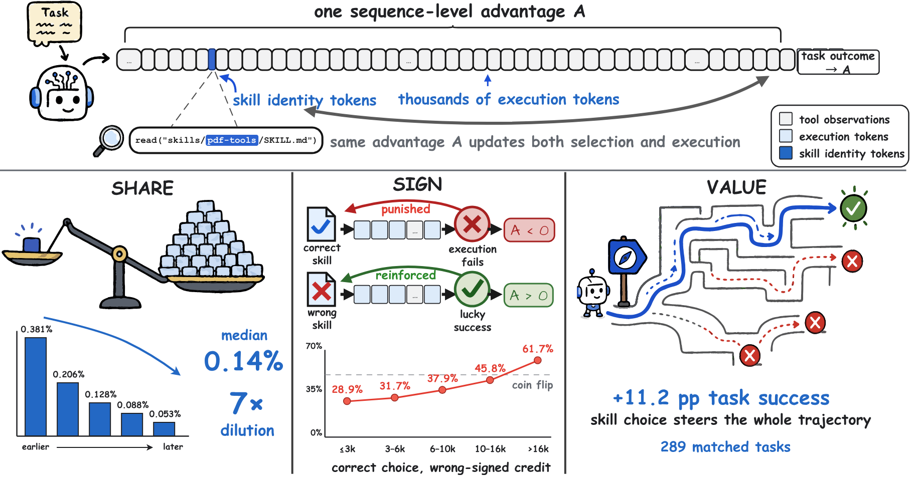
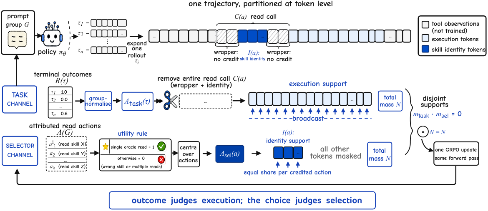

SkillGate: Training In-Policy Skill Selection in Long-Horizon Agents
Paper: arXiv 2608.18852 (v1, Aug 19 2026), by Qingyao Li, Wenxiang Jiao, Shuai Shao, Kangning Zhang, Yuan Lu, Yi Guo, Weiwen Liu, Weinan Zhang, Yong Yu — Shanghai Jiao Tong University & Xiaohongshu (RedNote). Code: github.com/DeepExperience/SkillGate; model: huggingface.co/simonlqy/SkillGate-9B. Grounded in the full arXiv HTML, appendices included.
TL;DR
- Names and measures selector credit starvation: under GRPO's broadcast advantage, the tokens naming a mid-episode skill read carry a median 0.14% of their trajectory's loss weight (~7× dilution with length) and roughly two in five oracle reads inherit a negative advantage because the execution afterwards failed (61.7% — past coin-flip — on the longest trajectories), yet the correct read is worth +11.2 pp task success. Audited offline on 12,800 trajectories of a real outcome-only run.
- SkillGate partitions the token support into two disjoint credit channels in one GRPO update: the outcome advantage broadcasts over execution tokens with the entire read call deleted from the task mask, while an action-local advantage lands on exactly the skill-naming tokens — positive only when a trajectory's single read is the verified oracle, centred over the group's read actions — both channels rescaled to equal per-batch loss mass, making the decision's weight length-invariant.
- On five agentic benchmarks with 16-candidate slates (1 oracle, 5 misleading hard negatives, 10 bystanders), Qwen3.5-9B goes 40.8% → 53.2% trial success vs 47.0% for the identical budget on outcome reward alone; oracle exposure 54.3% → 83.9%, misleading 69.6% → 21.8%, reads/trial 1.88 → 1.11 — and the policy, choosing from all 16 itself, beats the frozen executor's oracle-injection ceiling (50.0 vs 48.2, 280-trial protocol).
Why this matters
This is the RL-side answer to the question your skills cluster has been circling: agent-skills-harmful showed loaded skills induce structured failures, demystifying-agent-skills showed retrieval precision collapses as pools grow, and skill-entropy-rl showed invoking the right skill at the right moment — not having it — is the bottleneck. SkillGate asks the follow-up: can't the policy just learn to select, since RL already trains on rollouts where selection happens? No — not with outcome reward, for a structural reason: the two decisions are judged by different evidence. Whether the right file was named is knowable from the slate alone; whether the work was done well only from the outcome. Pooling both into one broadcast advantage lets each corrupt the other's signal, worse with horizon.
The audit methodology matters independently: they re-read a finished run's own trajectories, recompute advantages under the training normalisation, locate the identity tokens with the training tokenizer, and stratify by length — a template for diagnosing any buried decision in agentic RL.
The core idea
In-policy skill selection is a handful of tokens — the <skill-name> inside read("/skills/<skill-name>/SKILL.md") — settled early, from names and one-line descriptions alone, conditioning everything after. Under a broadcast advantage its gradient share equals its token share, the credit it inherits is wrong-signed whenever a correct choice precedes a failed execution, and the within-group signal-to-noise of read-vs-not collapses with length.

Figure 1 from the paper: Share (median 0.14% loss weight, ~7× dilution across length bins), Sign (oracle reads punished 28.9% → 61.7% of the time as trajectories grow, crossing coin-flip), Value (+11.2 pp success for the correct read over 289 matched tasks).The fix is not a better reward, nor a finer time-resolution of the same reward — it is a separation of credit: give the choice its own objective, computed where the choice is visible (the slate), and confine the outcome to the tokens that executed. Rollout, reward, and optimiser are untouched; everything is a statement about where an advantage may land.
How it works
Setup. A skill is \((\mathrm{name}, \mathrm{desc}, \mathrm{body})\); only name and description are shown up front. Each task carries a slate of \(K=16\) candidates as sandbox files: one verified oracle \(s^{\star}\), five misleading hard negatives (topically adjacent, functionally wrong), five relevant and five irrelevant bystanders from a 2,045-skill public library. Nothing is enforced — the agent may read any number of skills. Reads are attributed only from assistant-generated text (never observations, which could echo a path); each read \(a\) has a call span \(C(a)\) and a nested identity span \(I(a) \subseteq C(a)\), the skill name in the path; misaligned spans fail closed.
Task channel. The usual group-normalised GRPO advantage \(A^{\mathrm{task}}(\tau) = (R(\tau)-\mu_G)/(\sigma_G+\epsilon)\), broadcast over a mask from which every read call is deleted whole (wrapper, function name, path) — no task outcome can revise a selection. Skill bodies arrive as observations and are never trained.
Selector channel. Each read in the group's pooled action set \(A(G)\) gets a clean single-oracle utility; its advantage is the group-centred answer:
where \(\tau_a\) is the trajectory containing \(a\); no standard-deviation normalisation (action counts are small). Reading the oracle plus three more candidates scores zero — the single-read rule stops the policy from buying credit by reading everything. Three properties bound the term: the baseline is over actions (a promiscuous sibling lowers it for everyone); the action-weighted group sum is exactly zero (no standing pressure for or against reading); and signal appears only where the group disagrees — all-tie groups silence the channel.
Masking and normalisation. With \(N\) the original assistant-token mass in a batch, \(N_{\mathrm{task}}\) the post-deletion task mass, and \(M\) the number of credited reads:
so both channels sum to \(N\) (the paper's "N = N"): deleting read calls doesn't quietly lower the task channel's learning rate, and every credited action gets total weight \(N/M\) regardless of trajectory length or tokenizer splits. Supports are disjoint by construction — identity spans lie inside deleted call spans — asserted at mask construction, sharding, and the loss, aborting on violation. The objective is one clipped GRPO update over the same forward pass:
with \(\lambda=0.20\), \(\beta=3\times10^{-5}\). The selector term is on-policy — not behaviour cloning, not a reward bonus — and never sees a token the policy did not generate.

Figure 2 from the paper: outcome judges execution; the choice judges selection. Wrapper tokens are trained by neither channel.# SkillGate: one GRPO step (pseudocode reconstruction from Sec. 3)
for each task prompt x in batch: # 491 train tasks, no Claw
G <- n=8 on-policy rollouts of pi_theta # multi-turn tool loop
for tau in G:
R(tau) <- terminal verifier in [0,1] # only reward in the system
A(tau) <- attributed reads of /skills/<name>/SKILL.md from
assistant text; spans C(a), I(a); misaligned -> fail closed
A_task(tau) <- (R(tau) - mean_G) / (std_G + eps)
m_task <- assistant mask minus every read call C(a), deleted whole
for a in A(G): # group's pooled reads
u(a) <- 1 if a is tau_a's ONLY read and reads oracle s*, else 0
A_sel(a) <- u(a) - mean_{a' in A(G)} u(a') # centred; silent if all tie
w_task <- (N / N_task) on m_task # N = original assistant mass
w_sel <- N / (M * |I(a)|) on I(a) of M credited actions
assert supports disjoint at mask / shard / loss, else abort
L <- sum w_task * clip(r_t, A_task)
+ 0.20 * sum w_sel * clip(r_t, A_sel) + beta * KL
update theta # same forward pass, 100 steps
Training: Qwen3.5-9B from a shared SFT checkpoint, 100 GRPO steps, 8 rollouts/prompt, batch 128, LR 1e-6, 16 H800s. Training and evaluation oracles are disjoint as skill identities — nothing reduces to memorising which name goes with which task.
Results
Evaluation: 385 trials over Claw-Eval, SkillsBench, SETA, SWE, and Terminal-Bench 2.0 (56 non-Claw tasks × 4 repeats + 161 Claw × 1), fixed slates and seeds; behavioural breakdowns use a 280-trial repeated subset.
- Main comparison. SkillGate 53.2% overall vs SkillRL (outcome only) 47.0% — same initialisation, data, steps, hyperparameters, differing only in where the gradient lands. Task-mask only (delete read calls, no selector term) stays at 46.0%: removing the harmful credit isn't enough. Selection BC 44.7%, SelSkill-DPO 46.2%. SkillGate is best or tied-best among 9B rows on every benchmark, including Claw-Eval (60.2%) with zero Claw tasks in training; controlled-pair bootstrap +7.9 pp, 95% CI [+2.1, +14.3].
- Behaviour is the mechanism. Outcome-only RL learns to read more, not better — oracle and misleading exposure rise together (54.3%/69.6%). SkillGate shifts both jointly: 83.9% oracle, 21.8% misleading, \(P(\text{oracle}\mid\text{read})=85.5\%\), 1.11 reads/trial.
- The ablation ladder is unusually clean (280-trial): group-level regret 41.8% (a group-constant shift cancels within the group); trajectory-level bonus 41.8% (teaches reading, not discriminating); action credit on the first oracle read 45.0% (clean single-oracle 64.6%, but never penalises reading more); single-read SkillGate 50.0%, clean 75.4%. Each coarser placement fails in a way that identifies what the next must fix.
- A separate selector is not enough. Routers advertising one skill to the frozen SFT executor: SFT-9B router 40.7%; Qwen3.5-27B router 36.8% despite better top-1 routing (68.6%); a retrieval reranker 31.8% — independent scoring is what a slate of near-duplicates defeats. SkillGate at 50.0% beats even oracle-only injection into the frozen executor (48.2%), and injection on top of SkillGate still helps (52.9%): selection training didn't damage execution.
- Scale doesn't solve it. No frontier model reads the oracle on even half of trials (Kimi-K2.6 tops at 45.7%); 9B SkillGate beats Qwen3.5-397B-A17B (51.7%) and DeepSeek-V3.2 (47.5%) outright, though the four strongest frontier systems keep a ~7–8 pp success lead.
- Purity is cheaper: fewer reads, turns, and cumulative input tokens than the outcome-only baseline — only output tokens rise, reasoning before one read instead of trial-and-error after many; on-demand reading costs about what preloading one skill body would, vs 16× for the full slate.
How it connects
- skill-entropy-rl — nearest neighbour: both make skill invocation a separately-supervised decision inside GRPO against gold selection labels. Skill-Entropy grades a declared skill plan as a reward-level term; SkillGate moves credit at the token-support level onto the read action the policy already emits — no auxiliary declaration, plus a proof-by-audit that the route through outcome cannot work.
- trace-turn-level-rewards — same enemy (one advantage smeared over everything), opposite philosophy: TRACE redistributes outcome-derived credit densely via reference-model answer-readiness; SkillGate argues selection correctness is not a function of outcome at all, so it partitions instead. Composable: TRACE for execution turns, SkillGate for choice tokens.
- sp3o-segment-pbrl — SP3O's theory says trajectory-level signal SNR decays as the fraction of consequential steps falls; SkillGate's audit (sign error crossing coin-flip, SNR collapsing with length) is the sharpest empirical photograph of that decay, and both answer with localized signal — segment preferences there, an action-local ground-truth utility here.
- agent-skills-harmful — supplies the threat model: the dangerous skill is the topically relevant one, exactly the five hard negatives planted per slate. SkillGate is the first training-side countermeasure (misleading exposure 69.6% → 21.8%), but it only trains which file gets opened — the dominant failure there (a reasonable skill's defaults treated as requirements after reading) still lands on the execution channel.
- demystifying-agent-skills — the productive tension: it found ground-truth invocation "neither sufficient nor necessary" because agents route around bad retrieval; SkillGate measures +11.2 pp for the oracle read. Not a contradiction — demystifying's skills are mined from trajectories, SkillGate's oracles are written and verified to solve the task with adversarial decoys. Selection training is worth what your library's value spread is.
- msce-memory-to-skills — the supply side of the same market: MSCE crystallizes skills with applicability boundaries and verification metadata so selection is easier at the artifact level; SkillGate rewrites nothing and trains the chooser. At 2,000-skill scale you want both.
Critical take
- The oracle label is doing enormous work. The utility needs a verified correct skill per training task — the authors had to repair inherited oracles (wrong endpoints, bad fixtures, unsafe ordering) before selection metrics meant anything. That is expensive supervision, and the paper concedes the scheme cannot credit abstention. Real slates have zero or several adequate skills; exactly-one-oracle is a benchmark construction, and the single-read rule punishes legitimately consulting two.
- The single-read constraint isn't free — the paper's own appendix says so. On the 147 held-out Claw tasks, plain action credit beats SkillGate 65.3% vs 61.2% pass@1 (at 20.4% vs 15.0% misleading reads). The authors call it distribution-specific; I'd call the purity–flexibility trade-off unresolved.
- Statistics are honest but thin: single runs per configuration, the pooled trial-success CI excludes zero but pass@4 (+7.1 pp, [−1.4, +15.7]) does not, every per-benchmark interval crosses zero, and SkillsBench and TB2 have 32 trials each. Trust the behavioural shifts, not the per-benchmark ordering.
- Selection is necessary, not sufficient. SkillGate reads the oracle on 83.9% of trials and still sits ~7–8 pp under the top frontier models, which read it under half the time — execution capability dominates at 9B. Selection is a distinct trained capability, not a substitute for scale.
If you remember three things
- Selector credit starvation is real and measurable: under a broadcast advantage, a mid-episode choice's gradient share equals its token share (median 0.14%, 7× dilution), its credit goes wrong-signed past coin-flip on long trajectories, and its +11.2 pp value never reaches the update. Audit your own runs' artifacts before assuming RL "reaches" a decision.
- Partition, don't redistribute: when a trajectory interleaves decisions judged by different evidence, give each a disjoint credit channel with equal per-batch mass in one GRPO update — delete the read call from the task mask, land a group-centred, single-read-gated utility on exactly the identity tokens.
- Train the chooser inside the policy: a 27B router with better top-1 accuracy yields a worse agent than a trained-in-policy 9B selector, and SkillGate choosing from 16 candidates beats oracle-injection into its frozen predecessor — selection, acceptance, and execution co-adapt only when the same weights learn all three.